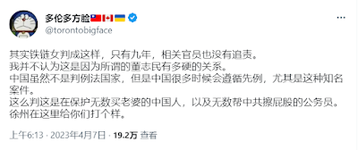

聊聊带节奏与独立思考 - Discussion on stirring up and thinking independently
一年以来，我一直关注一个推主：多伦多方脸。我感觉他比较喜欢带节奏。在这里举个例子：
For a year now, I've been following one tweeter: Torontobigface. I feel like he likes to stir up. Here is an example:

什么是“带节奏”呢，我的理解是：煽风点火，引导读者从一个特定的角度思考这件事。
What is "stir up", my understanding is: to guide readers to think about this matter from a specific angle.
中文推特键政圈是一个特别容易被人带节奏的圈子(我以后可能会写一篇博客讨论它)。这里面有很多妖魔鬼怪。即使只讨论反对中国政府的人，也有很多乱七八糟的人。比如，法轮功，民运人士，基督徒，屠支大佐，抽象人...
The Chinese Twitter political circle is a circle that is particularly easy to be stir up (I may write a blog about it in the future). There are a lot of messy people in it. Even if only talking about people who are against the Chinese government, there are lots of different people supporting different ideas. For example, Falun Gong, pro-democracy activists, Christians, extremely anti-Chinese people, sarcastic people...
为什么有这么多种人不难理解，他们对不同的事情有不同的看法也不难理解。但是难以理解的是，他们说的话非常没有逻辑，但又有很多人对他们言听计从。
It is not difficult to understand why there are so many kinds of people, and it is not difficult to understand why they have different opinions on different things. But what is incomprehensible is that what they say is very illogical, but many people still follow them.
以刚刚多伦多方脸的推文为例，他这一番推理只是基于我们对中国政治内部所知甚少，他的言论能够自洽罢了，完全没有什么必然逻辑。或者说，他并不是因为结论是正确的，而只是因为结论是大家想听的，才做出这个结论。这就是一次典型的“带节奏”。
Take Torontobigface's tweet above as an example. His reasoning is based on our little knowledge of China's internal politics. His tweet is self-consistent, but without any inevitable logic at all. In other words, he made this conclusion not because the conclusion is correct, but because the conclusion is what everyone wants to hear. This is a typical "stir up".
中文键政圈里到处都是这种言论，有些很明显，有些不那么明显。总而言之，这些言论用非常简明的几句话得出了一个读者喜欢看见的答案。这种东西会流行的原因恐怕是因为，大家是在网上娱乐的，没有人想真正思考一件事情。
This kind of remarks are everywhere in Chinese political circles, some obvious, some not so obvious. All in all, these remarks have drawn an answer that readers like to see in a few very concise sentences. The reason why this kind of thing becomes popular is probably because everyone is entertaining on the Internet, and no one wants to really think about one thing.
想要对一件事独立思考真的太困难了。只看推特中反贼们的言论而不思考，久而久之肯定会变成一个反贼。反之亦然，只看推特中粉红们的言论而不思考，久而久之肯定会变成一个粉红。只有独立思考了，才不至于被意见领袖们牵着鼻子走。
It could be really hard to think them indenpendly. Just reading what the opposition say on Twitter without thinking about it, one will definitely become a opposition over time. And vice versa, if only look at the comments of patriot on Twitter without thinking about it, one will definitely become a patriot over time. Only by independent thinking, one can avoid being led mind by opinion leaders.
但是，为什么独立思考比听别人意见更好？
But, why is it better to think independently than to listen to others?
只有自己知道自己的真正的需求是什么。举个例子：我看政治言论的目的是决定自己将来在哪里生活。这是一件很重要的事情，如果对两边了解不足，在被洗脑的情况下让其他人来帮我决定这件事情，将来总会有幻想破灭的一天。
Only you know what your real needs are. For example: I pay close attention on political topics for the purpose of deciding where I will live in the future, which is a very important decision. If I don't know enough about both sides, and let other people decide for me. This is kind of being brainwashed, and there will always be a day when my illusions will be disillusioned in the future.
再下一个问题是，我们能独立思考吗？我对这个问题的回答是，也许能。
The next question is, can we think independently? My answer to this question is, maybe.
如果说独立思考意味着完全自己搜罗信息，自己分析信息，自己做决定，那这也太累了，事实上不可能实现。
If independent thinking means collecting information, analyzing information, and making decisions by oneself, then this could be too tiring, and it is actually impossible to achieve.
所以说只能降低要求，自己收集部分信息，再加上听取一些其他人的信息和结论，然后做决定。比如说，在社交媒体上大量阅读两边的言论，然后再加上自己的观察，适当向其他人询问当作补充，这样的结论应该可靠。这也算是广义上的”独立思考“了。
So we can only lower the requirements, collect some information by ourselves, add some other people's information and conclusions, and then make a decision. For example, read a lot of comments on both sides on social media, then add own observations, and ask other people as a supplement. The conclusions drawn after such procedure should be reliable. Maybe this can be regarded as "independent thinking" in a broad sense.
在这个过程中，要小心信息茧房。
During this process, be careful of possible information bubbles.
一个人会因为喜欢听另一个人的话，从而和他/她交朋友，或者关注他/她。截止目前，我的推特关注了700多人，其中绝大多数人都只说我喜欢听的话。很明显，我已经在一定程度上掉到信息茧房里面了。想要解决这个问题，也许只能尽量多交朋友，多和更多种类的朋友交流了。
One will befriend or follow another because he/she likes to listen to another person's words. As of now, I follow more than 700 people on Twitter, and most of them only say what I like to hear. Obviously, I have fallen into my information bubble to a certain extent. To solve this problem, maybe one can only make as many friends as possible, and communicate with more types of friends.
2023/04/08